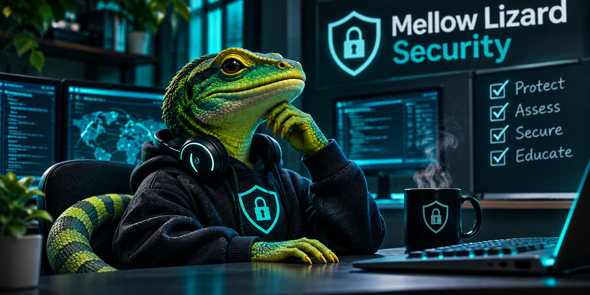

About
Who We Are
Mellow Lizard Security is a fictional cybersecurity consulting company dedicated to protecting individuals and small businesses from digital threats. We believe that strong cybersecurity should be accessible, understandable, and practical for everyone.
Our team focuses on helping clients identify potential vulnerabilities, understand their security risks, and develop safer digital environments. Whether protecting a personal website or a business network, we approach every security challenge with care.

Why We Do It
Technology plays an important role in everyday life, but not everyone has the resources or experience needed to protect their information. We created Mellow Lizard Security around the idea that cybersecurity does not need to be overwhelming.
Our mission is to make digital safety easier to understand through clear communication, responsible security practices, and solutions tailored to each client's needs.
Our Core Values
We value trust, transparency, education, and continuous improvement. We believe clients should understand the security recommendations they receive and feel confident making decisions about their systems.
By prioritizing prevention and education, we aim to help our clients establish safer habits and stronger defenses for the future.